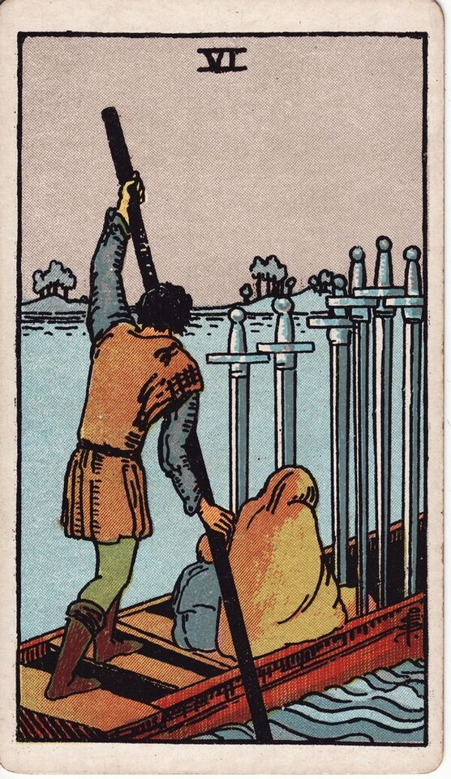

Minor Arcana · Suit of Swords
Six of Swords Tarot Card Meaning
The Six of Swords is the quiet crossing — transition, moving on, rough water giving way to calm. Want to know what it means in your spread? Every reader on our line is hand-vetted — connect in under 60 seconds, $1 for your first minute, hang up anytime.
- Hand-vetted readers
- Available 24/7
- Hang up anytime

Six of Swords — What It Shows
A ferryman poles a small boat carrying a cloaked figure and a child across water — choppy on the near side, smooth ahead. Six swords stand upright in the hull, carried but not wielded. After the conflict of the Five, the Six is the departure from it: not a triumphant exit, but a necessary, somber move toward calmer water, baggage and all.
Six of Swords Upright Meaning
Upright, the Six of Swords is transition and recovery. Moving away from a difficult situation toward something steadier — a journey, a relocation, distance from a problem, or simply turning the corner after a hard time. It's rarely jubilant; it's relief that you're finally heading somewhere better. Its core note is moving on.
Six of Swords Reversed Meaning
Reversed, the crossing stalls. Being stuck, resisting a move you know you need, unfinished emotional baggage following you, or returning to the rough water you tried to leave. It can also be a transition that's harder or more delayed than hoped.
Six of Swords in Love & Relationships
In love, the Six of Swords is moving on from a hard chapter, a relationship calming after turbulence, or literal distance and travel. Example: a caller exhausted by an on-off cycle drew this card; the read framed it as the moment to actually make the crossing — leaving the choppy water rather than circling back to it again.
Six of Swords in Career & Money
For work it's a transition — a new role, a move, leaving a difficult environment, or gradual recovery after a setback. Example: someone unsure about leaving a toxic job pulled this card; the message supported the move toward calmer water, with the honest note that you can carry the lessons (the swords) without staying in the storm.
Six of Swords as Advice
As advice: make the crossing. Move toward the calmer situation even if it's sad to leave, and accept that you can take what you've learned with you without staying in the rough water.
Six of Swords Reversed in Love & Career
Reversed, this card deserves a closer look by area. In love, it's being unable to leave a relationship that keeps you in rough water, returning to an ex or pattern you'd moved past, or carrying so much baggage the transition can't complete. In career, reversed it's resisting a needed change, a delayed or sabotaged move, or going back to a difficult situation out of fear. The reversed Six's question is what's keeping you on the near shore. A live reader can help you see what the baggage really is.
What People Ask About the Six of Swords
The questions readers hear most about this card:
"Does it mean travel or moving?"
Often — literal travel, relocation, or distance, alongside emotional transition.
"Six of Swords as feelings?"
Wanting calm, ready to move on — "I need to get away from this."
"Is it the end of a hard time?"
Usually yes — heading toward smoother water, even if not instantly.
"Will an ex come back?"
Reversed can show returning; upright leans toward moving forward.
Six of Swords — Yes or No?
A cautious yes — improvement through transition. Reversed leans no, or "not while you're stuck."
Six of Swords Timing in a Reading
Timing is the least precise thing tarot does, so treat this as a lean, not a date. The Six of Swords describes a journey more than an instant — readers usually frame it as a gradual transition over weeks, moving steadily rather than suddenly. Reversed, the move is delayed or stalled. A live reader reads timing from the full spread and your question far more reliably than the card alone.
Six of Swords Card Combinations
Context changes everything — a few pairings readers see often:
Six of Swords + Three of Swords
Moving on and recovering after heartbreak.
Six of Swords + The World
A transition completing — a chapter genuinely closed.
Six of Swords + Eight of Cups
Walking away from what's not working toward calmer ground.
Six of Swords in a Tarot Reading
A meanings page is the map; a live reading is the territory. The Six of Swords shifts with its position and the cards around it — which is what a hand-vetted reader interprets for your question. See the full Suit of Swords, all 56 cards on the Minor Arcana hub, or start a phone tarot reading.
← Five of Swords · Next: Seven of Swords →
What Does the Six of Swords Mean for You?
A meanings list is the map; a live reading is the territory. We'll connect you with the right hand-vetted tarot reader in under 60 seconds. $1/min first call · 15 minutes for $10 · hang up anytime · 100% satisfaction promise.
Call (888) 920-6662 NowSix of Swords — Frequently Asked Questions
What does the Six of Swords mean?
Transition — moving from rough water toward calmer shores; recovery and moving on.
What does it mean reversed?
Being stuck, resisting a needed move, or unfinished baggage following you.
What does the Six of Swords mean in love?
Moving on from a hard chapter, calming after turbulence, or distance/travel.
Is it a yes or no card?
A cautious yes — improvement through transition; reversed leans no.
How much does a reading cost?
First-time callers pay $1/min, or 15 minutes for $10, and you can hang up anytime.
Get Your Tarot Reading Now
Connected to a hand-vetted reader in under 60 seconds, the cards pulled on your real question, and you hang up with clarity.
Call (888) 920-6662